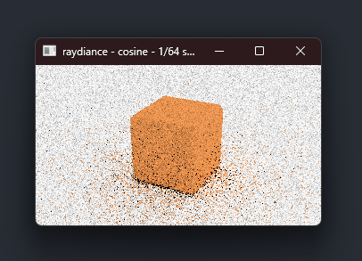
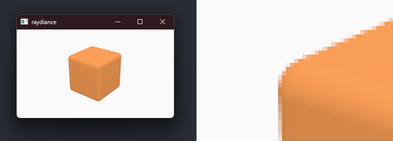
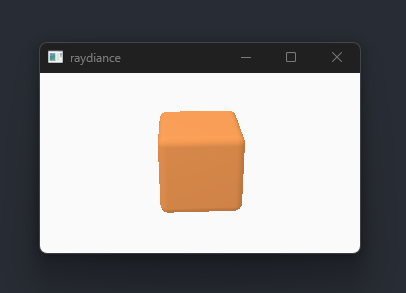
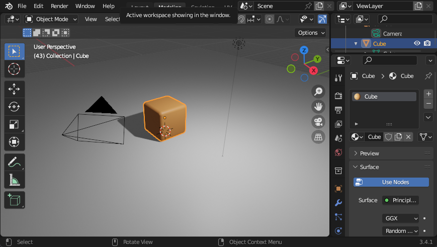
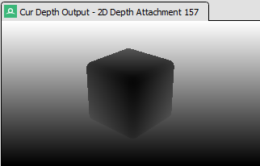

Cosine-weighted hemisphere sampling
2023-01-13

To get a cleaner picture, we could increase the number of
samples, but that would increase render times, which forces us
to find ways to make the renderer run faster. Alternatively, we
could be smarter at using our limited number of samples. This
way of reducing noise in Monte Carlo simulations is called
importance sampling.
For our simple diffuse cube scene, one of the most impactful
techniques is cosine-weighted hemisphere sampling. Since the
rendering equation has a cosine term, it makes sense to sample
from a distribution that is similar to that. Our implementation
is based on
pbrt.
Uniform sampling
Cosine-weighted sampling
Here is the comparison between uniform sampling. It is clear that
with identical sample counts, cosine-weighted sampling results
in much cleaner picture than uniform sampling. And it does it at
pretty much equivalent time.
Progressive rendering
2023-01-12

Previously we waited until the entire image was completed before
displaying to the screen. In this commit we redesigned the path
tracing loop to render progressively and submit intermediate
frames as soon as they are finished. This significantly improves
interactivity.
Interactive CPU path tracer
2023-01-12
This commit merges the CPU path tracer with the Vulkan renderer,
and makes the camera interactive. As soon as the path tracer
finishes rendering, the image is uploaded to the GPU and
rendered on the window. We can also toggle between raytraced
image and rasterized image to confirm that both renderers are in
sync.
To keep the Vulkan renderer running while the CPU is busy path
tracing, we need to run the path tracer on its own thread. To
communicate across threads boundaries, we use Rust standard
library
std::sync::mpsc:channel.
The main thread sends camera transforms to the path tracer, and
the path tracer sends the rendered images back to the main
thread. The path tracer thread blocks on the channel in prevent
busy looping.
For displaying path traced images on the window, we set up a
both the uploader and the rendering pipeline for the image.
Uploading image data is not very exciting, refer to this page
from
Vulkan Tutorial.
However, for rendering we used two tricks:
-
To render a fullscreen textured quad, you don't actually
need to create vertex buffers, set up vertex inputs, and so
on. With this trick,
you can use
gl_VertexIndex intrinsic in the
vertex shader to build a huge triangle and then calculate
the UVs within it. This saves a lot of boilerplate.
-
In Vulkan if you want to sample a texture in your fragment
shader, you need to create descriptor pools, descriptor set
layouts, allocate descriptor sets, make sure pipeline
layouts are correct, bind the descriptor sets, and so on. With
VK_KHR_push_descriptor
extension, it is possible to simplify this process
significantly. Enabling it allows you to push the descriptor
right before issuing the draw call, saving a lot of
boilerplate. We still have to create one descriptor set
layout for the pipeline layout object, but that is not too
bad compared to what we had to do before, just to bind one
texture to a shader.
As a side, vulkan.rs is reaching 2000 LOC, which is
getting pretty challenging to work with. We will have to break
it down soon.
The path tracing performance is not great because we are still
using only one thread. It is also why the image is noisier than
the previous post, since we had to lower the sample count to get
barely interactive frame rates. We will address the noise and
the performance in upcoming commits.
Path tracing on CPU
2023-01-11

Finally, we are getting into the main feature of
raydiance: rendering pretty images using ray
tracing. We start with a pure CPU implementation. The plan is to
develop and maintain the CPU version as the reference
implementation for the future GPU version, mainly because it is
much easier to work with compared to debugging shaders. The
Vulkan renderer we've built so far serves as the visual
interface for
raydiance, and later, we will use Vulkan's ray
tracing extensions to build the GPU version.
Our implementation use the following components:
- Ray vs triangle intersection: Watertight Ray/Triangle Intersection
- Orthonormal basis: Building an Orthonormal Basis, Revisited
- Uniformly distributed random numbers:
rand and rand_pcg crates
- Uniform hemisphere sampling:
pbrt
- Acceleration structure (bounding volume hierarchy):
pbrt
We put this together into a path tracing loop, where we bounce
rays until they hit the sky or they have bounced too many times.
Each pixel in the image does this a number of times, averages
all the samples and writes out the final color to the image
For materials, we start with the simplest one: Lambertian
material, which scatters incoming light equally in all
directions. However, there is a subtle detail in Lambertian
BRDF, which is that you have to divide the base color with π.
Here's the explanation from pbrt.
For lights, we assume that every ray that bounces off the scene
will hit “the sky”. In that case, we just return some bright
white color.
For anti-aliasing, we randomly shift the subpixel position of
each primary ray and apply the box filter over the samples. With
enough samples, this naturally resolves into a nice image with
no aliasing. pbrt's
image reconstruction chapter has better alternatives for box
filter, which we might look into later.
For performance, we currently run the path tracer in a single
CPU thread. Obviously this is not ideal, but for such a tiny
image and low sample count, the rendering only takes a couple of
seconds. We will come back to this once we need to make the path
tracer run at interactive speeds.
Currently raydiance doesn't display the path traced image
anywhere, for this post we wrote the image out to the disk. We
will fix this soon.
Adding multisampled anti-aliasing (MSAA)
2023-01-10

This was pretty easy. Similarly to depth buffer, we create a new
color buffer which will be multisampled. The depth buffer is
also updated to support multisampling. Then we update all the
resolve* fields in VkRenderingAttachmentInfo,
and finally we add multisampling state to our pipeline. No more
jagged edges.
More triangles, cameras, light, and depth
2023-01-09

A lot has happened since our single hardcoded triangle. We can
now render shaded, depth tested, transformed, indexed triangle
lists, with perspective projection.
Loading and rendering GLTF scenes

We created a simple "cube on a plane" scene in Blender. Each
object has a "Principled BSDF" material attached to it. This
material is well
supported by Blender's GLTF exporter, which is what we will
use for our application. GLTF supports text formats, but we will
export the scene in binary (.glb) for efficiency.
To load the .glb file, we use gltf
crate. Immediately after loading, we pick out the interesting
fields (cameras, meshes, materials) and convert them into our
internal
data format. This internal format is designed to be easy to
upload to the GPU. We also do aggressive validation in order to
catch any properties that we don't support yet, such as
textures, meshes that do not have normals, and so on. Our
internal formats represent matrices and vectors with types from
nalgebra
crate. To turn our internal formats into byte slices bytemuck crate.
Before we can render, we need to upload geometry data to the
GPU. For now, we assume the number of meshes is much less than
4096 (on most Windows hosts the maxMemoryAllocationCount
is 4096). This allows us to cheat and allocate buffers for each
mesh. The better way to handle allocations is make a few large
allocations and sub-allocate within those, which we can do
ourselves, or use a library like VulkanMemoryAllocator.
We will come back to memory allocators in the future.
To render, we will have to work out the perspective projection,
the view transform and object transforms from GLTF. We also add
rotation transform to animate the cube. We pre-multiply all
transforms and upload the final matrix to the vertex shader
using push
constants. The base color of the mesh is also packed into a
push constant. Push constants are great for small data, because
we can avoid:
- Descriptor set layouts, descriptor pools, descriptor sets
- Uniform buffers, which would have to be double buffered to avoid stalls
- Synchronizing updates to uniform buffers
As a side, while looking into push constants, we learned about
VK_KHR_push_descriptor.
This extension sounds like it could further simplify working
with Vulkan, which is really exciting. We will come back to it
in the future once we get into texture mapping.
Depth testing with VK_KHR_dynamic_rendering

Depth testing requires a depth texture, which we create at
startup, and re-create when the window changes size. To enable depth testing with
VK_KHR_dynamic_rendering, we had to extend our
graphics pipeline with a new structure called
VkPipelineRenderingCreateInfo,
and also add color blend state which was previously left out.
One additional pipeline barrier was required to transition the
depth texture for rendering.
The first triangle
2023-01-08

This is the simplest triangle example rendered without any
device memory allocations. The triangle is hard coded in the
vertex shader and we index into its attributes with vertex
index.
We added a simple shader compiling step in
build.rs
which builds
.glsl into .spv using Google's glslc,
which is included in LunarG's Vulkan
SDK.
Next we will implement device memory allocations in order to
load a 3D model from a file.
Clearing window with VK_KHR_dynamic_rendering
2023-01-08

After around 1000 LOC, we have a barebones Vulkan application which:
- Load Vulkan with
ash crate.
- Creates Vulkan instance with
VK_LAYER_KHRONOS_validation and debug utilities.
- Creates window surface with
ash-window
and
raw-window-handle crates.
- Creates logical device and queues.
- Creates command pool and buffers.
- Creates swapchain.
- Creates semaphores and fences for host to host and host to device synchronization.
- Clears the screen with a different color every frame.
We also handle tricky situations such as user resizing the window and minimizing the window.
Notably we are not creating render passes or framebuffers, thanks to
VK_KHR_dynamic_rendering. We do have to specify some
render pass parameters when we record command buffers, but reducing
the number of API abstractions simplifies the implementation
signifcantly. We used this example
as a reference.
Everything is written under main() with minimal
abstractions and with liberal use of unsafe. We
will do a semantic
compression
pass later once we have learned more about how the program should be
laid out.
Next we will continue with more Vulkan code to get a triangle on the screen.
Hello, winit!
2023-01-07

Before anything interesting can happen, we are going to need a window to draw on. We use winit
crate for windowing and handling inputs. For convenience, we
bound the Escape key to close the window and center the window
in the middle of the primary monitor.
For simple logging we use log and env_logger,
and for application-level error handling we use anyhow.
Next we are going to slog through a huge amount of Vulkan
boilerplate to begin drawing something on our blank window.